Oil Pan: Service and Repair
Oil sumpTo remove
1. Raise the car.
2. Remove the front right wheel.
3. Remove the right wing liner and raise the car further. CV: Remove Chassis reinforcement, front supporting frame, CV
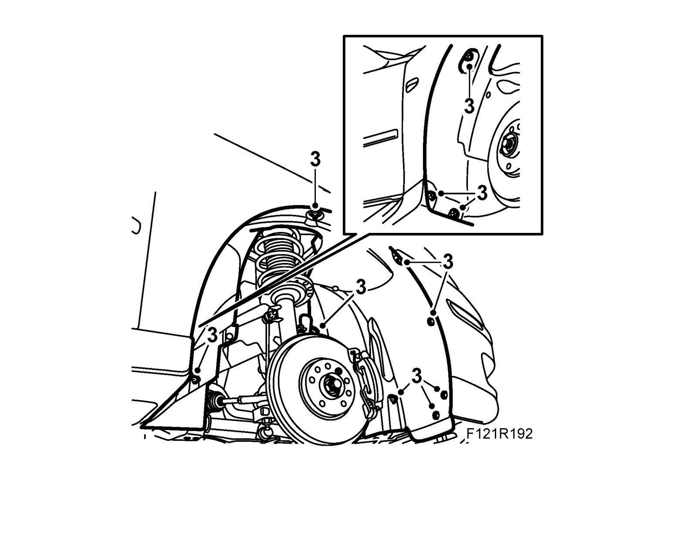
4. Place a receptacle under the car and drain the engine oil.
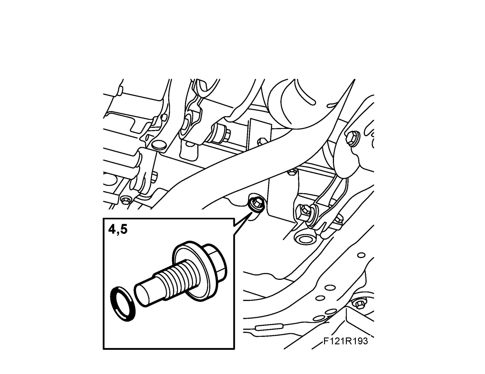
5. Fit the oil plug with a new seal and lower the car.
6. Remove the upper engine cover.
7. Remove the dipstick.
8. Remove the dipstick tube fixing bolt.
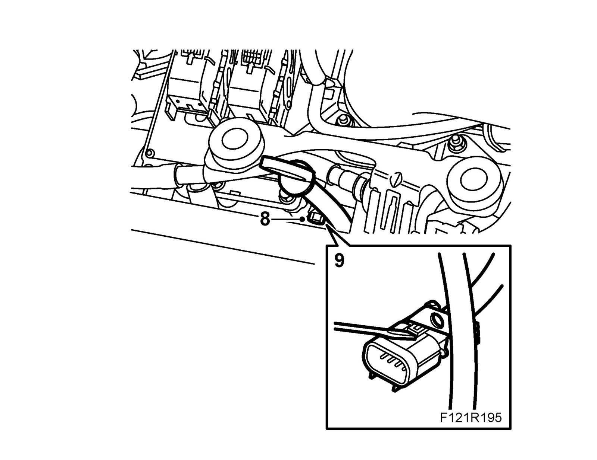
9. Unplug and detach the connector from the mounting on the dipstick.
10. Undo the clip and pull up the dipstick from the oil sump.
11. Raise the car and undo the connector to the oil level sensor. (Only on engine variant B207R)
12. Remove the lower charge air pipe.
13. Remove the lower A/C compressor retaining bolt.
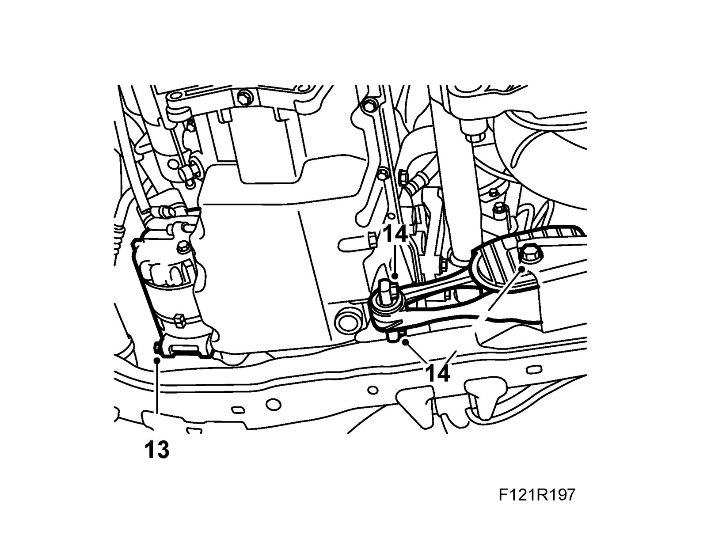
14. Up to M04 inclusive: Undo the rear torque arm bolt and remove the front bolts.
15. Remove the oil pan retaining bolts.
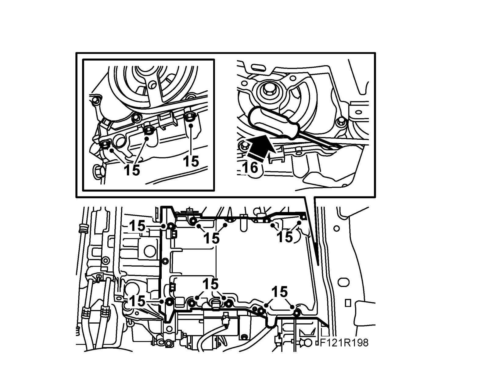
16. Place a screwdriver between the oil pan and the timing cover by the A/C compressor and carefully pry loose the oil sump.
To fit
1. Clean the sealing surfaces on the engine block and the sump. Remove any impurities in the oil sump.
2. Apply a 2mm thick bead of 90 543 772 Silicone flange sealant on the oil sump sealing surface and on the connection to the oil strainer suction pipe.
3. Fit the oil sump carefully so that the sealing compound is not disturbed.
Tightening torque, oil sump 22 Nm (16 lbf ft).
Tightening torque, bolts in gearbox 70 Nm (52 lbf ft).
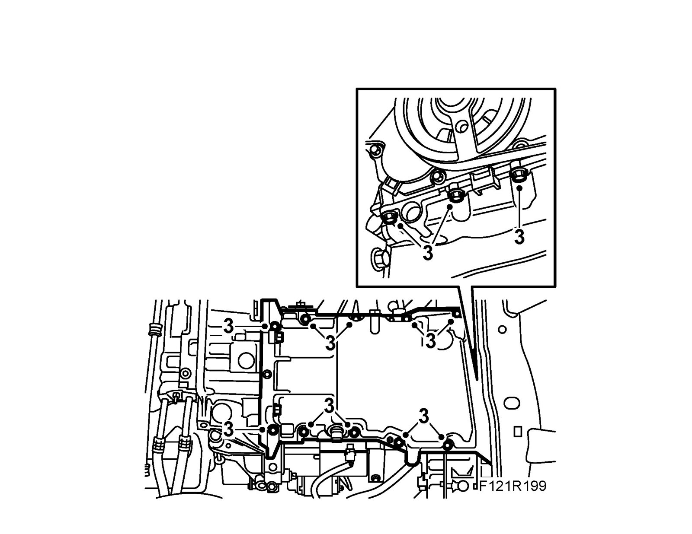
4. Up to M04 inclusive: Fit the front torque arm bolts to the oil sump and tighten the rear bolt.
Tightening torque, front bolts 37 Nm (27 lbf ft).
Tightening torque, rear bolt 70 Nm + 90° (52 lbf ft + 90°)
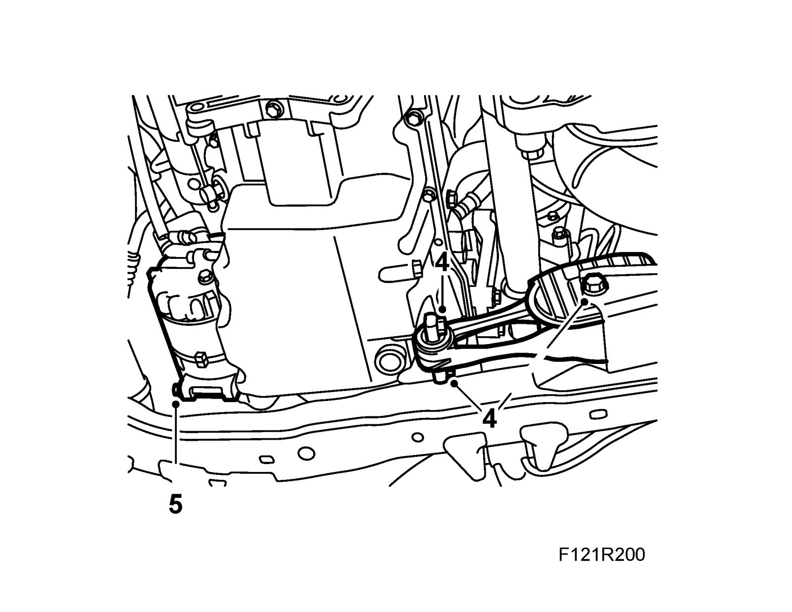
5. Fit the lower A/C compressor retaining bolt.
Tightening torque 24 Nm (18 lbf ft).
6. Replace the charge air pipe.
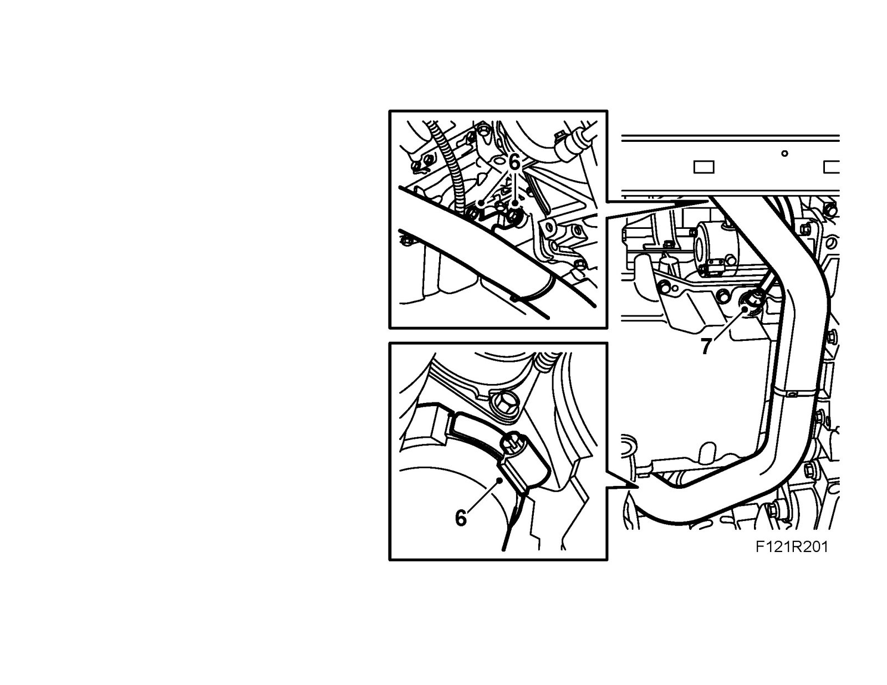
7. Plug in the oil level sensor connector.
8. Fit the oil plug with a new O-ring.
Tightening torque 25 Nm (18 lbf ft).
CV: Fit Chassis reinforcement, front subframe, CV.
9. Fit a new fastening clip on the connector.
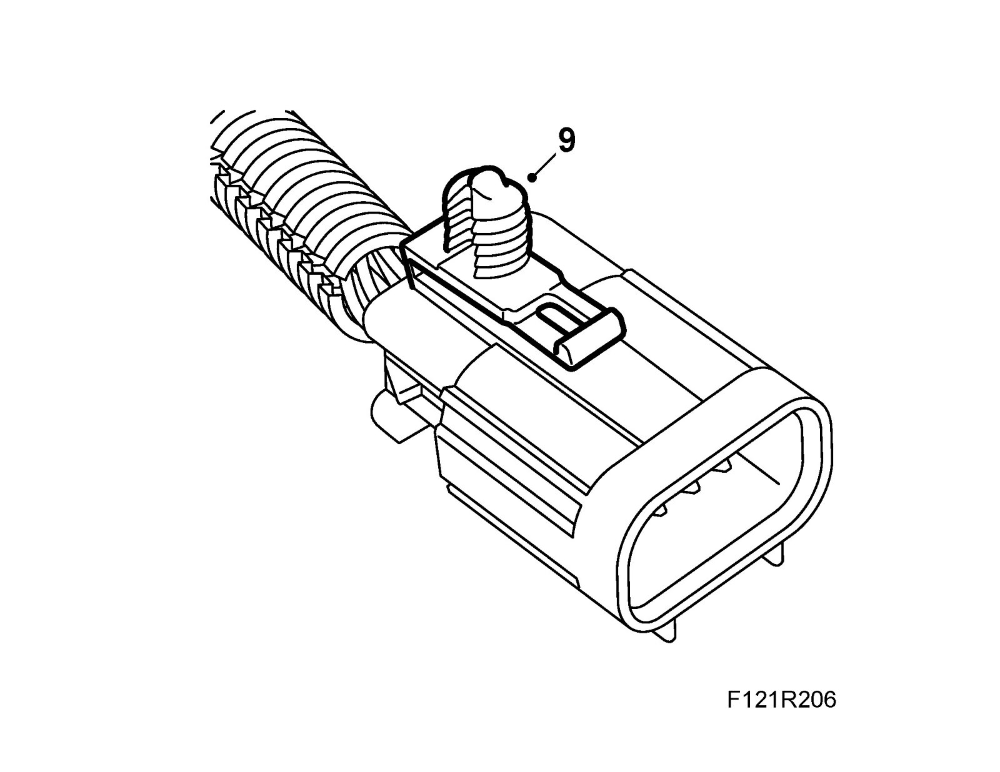
10. Lower the car slightly and fit the right wing liner.
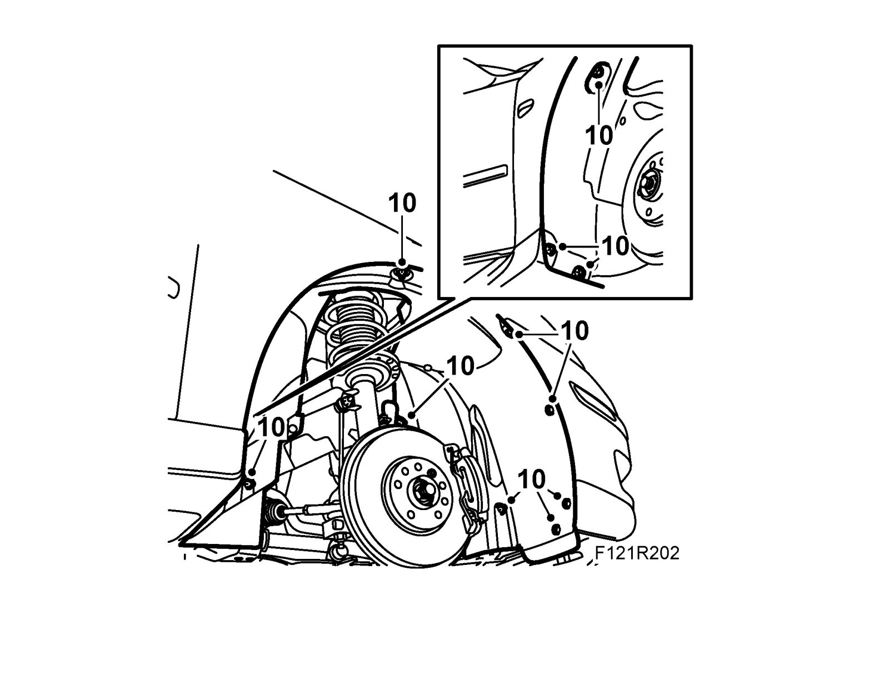
11. Fit the front right wheel and lower the car to the floor. See Wheels.
Tightening torque 110 Nm (81 lbf ft)
12. Remove the connector's fastening clip and fit the dipstick tube with new O-rings lubricated with Vaseline, Kl�ber Syntheso Pro AA2.
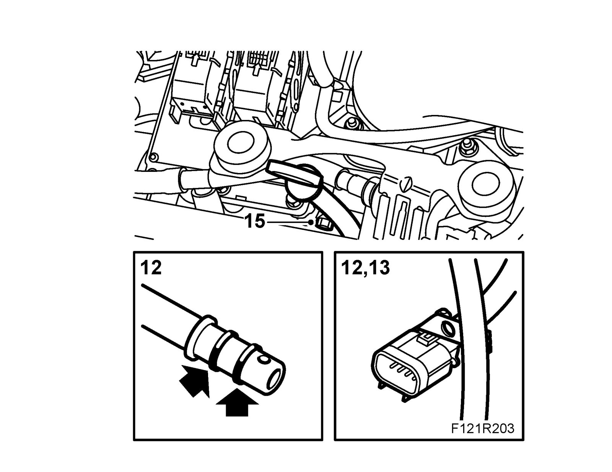
13. Fasten the connector clip to the dipstick. Plug in the connector.
14. Fit the ventilation line clip to the dipstick.
15. Fit the dipstick.
16. Fill with engine oil as specified, see Recommended oil quality.
17. Connect an exhaust extractor and start the engine. Switch off the engine and wait 2-5 minutes. Check the oil level and adjust as necessary.
18. Replace the upper engine cover.
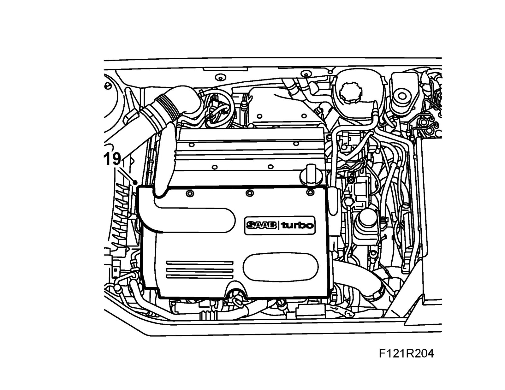